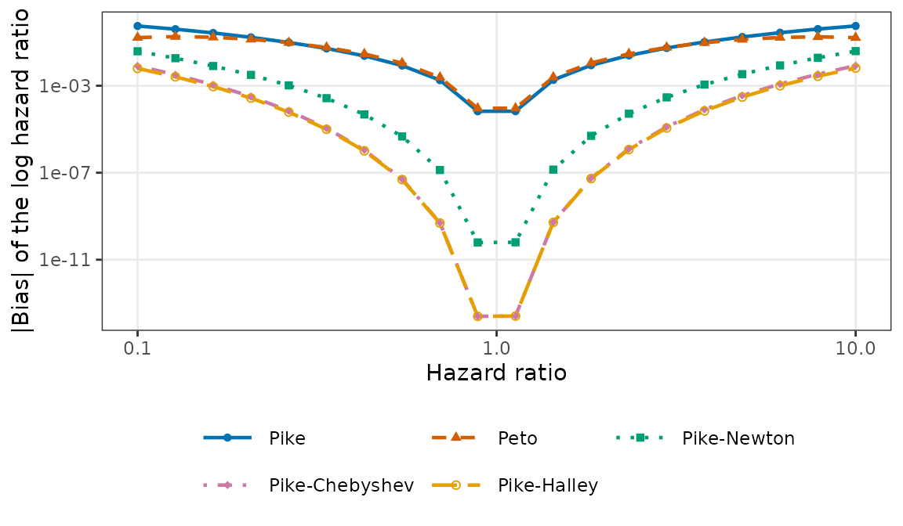
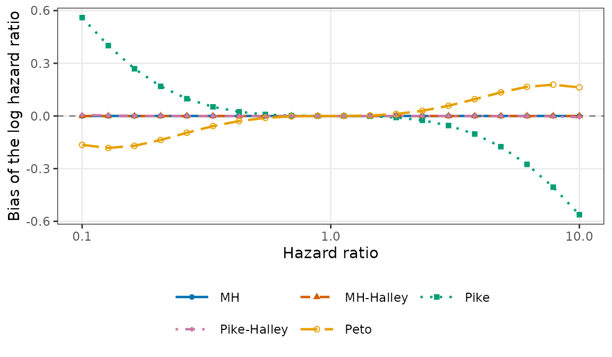
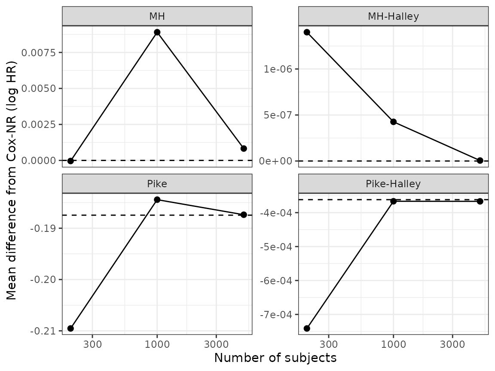

A one-step correction converges to the Cox limit only if its anchor
does. Under proportional hazards, the Mantel-Haenszel estimator
converges to the true log hazard ratio, whereas the Pike and Peto
estimators converge to other values unless the hazard ratio is 1.
LimitHR() computes these limits under the design of
GenSimData(); this article uses it to show how large the
differences are and how they carry over to the one-step corrections.
Limits over a range of hazard ratios
The design below has equal groups, uniform accrual over a period of
length a, and the analysis when a fraction
E / (n_T + n_C) of the subjects have had an event. The
limits depend on the allocation, the hazards, a, and this
fraction, not on the sample size itself.
design <- list(hazard_C = log(2) / 18, n_T = 100, n_C = 100, a = 12,
E = 150)
hr <- exp(seq(log(0.1), log(10), length.out = 20))
lim <- do.call(LimitHR, c(list(HR = hr), design))The first figure shows the absolute bias of the estimators whose limits differ from the true value: the Pike and Peto estimators and the corrections from the Pike anchor.
plot(lim)
The second figure shows the signed bias of the anchors and of the Halley steps from each anchor. The Mantel-Haenszel anchor and the MH-Halley estimator stay on the line at zero.

The bias at selected hazard ratios
hr_tab <- c(0.2, 0.5, 2, 5, 10)
lim_tab <- as.data.frame(do.call(LimitHR, c(list(HR = hr_tab), design)))
shown <- c("Pike", "Peto", "Pike_Newton", "Pike_Halley", "MH", "MH_Halley")
tiny <- 1e-12
fmt_bias <- function(x) if (abs(x) < tiny) "0" else fmt_num(x)
tab <- sapply(hr_tab, function(h) {
vapply(shown, function(m) {
fmt_bias(lim_tab$bias[lim_tab$method == m & abs(lim_tab$HR - h) < 1e-8])
}, character(1))
})
colnames(tab) <- paste("HR", hr_tab)
rownames(tab) <- gsub("_", "-", shown)
knitr::kable(tab, align = "rrrrr",
caption = "Large-sample bias of the log hazard ratio")| HR 0.2 | HR 0.5 | HR 2 | HR 5 | HR 10 | |
|---|---|---|---|---|---|
| Pike | 0.18 | 0.013 | -0.013 | -0.19 | -0.56 |
| Peto | -0.14 | -0.016 | 0.016 | 0.14 | 0.16 |
| Pike-Newton | 0.0036 | 1.2 × 10-5 | -1.3 × 10-5 | -0.0039 | -0.039 |
| Pike-Halley | 3.3 × 10-4 | 1.6 × 10-7 | -1.8 × 10-7 | -3.6 × 10-4 | -0.0065 |
| MH | 0 | 0 | 0 | 0 | 0 |
| MH-Halley | 0 | 0 | 0 | 0 | 0 |
Values smaller than 1 × 10-12 in absolute value, which are rounding error, are shown as 0.
At a hazard ratio of 10, the limit of the Pike estimator differs from the true value by 0.56 on the log scale. One Newton step from it leaves 0.039, and one Halley step 0.0065, which no longer shrinks as the sample size grows. The MH-Halley limit is the true value up to rounding error.
Finite samples approach the limits
In simulated trials of this design with increasing sample sizes, the mean difference between each estimate and the Cox estimate approaches the difference between their limits. Because the Cox estimator converges to the true value, that difference is the large-sample bias of the estimator.
hr_check <- 5
sizes <- c(200, 1000, 5000)
frac <- design$E / (design$n_T + design$n_C)
check_sc <- data.frame(label = paste("n =", sizes), n_T = sizes / 2,
n_C = sizes / 2, hazard_C = design$hazard_C,
HR = hr_check, a = design$a, E = frac * sizes)
fin <- CompareOC(check_sc,
methods = c("Cox_NR", "Pike", "Pike_Halley", "MH",
"MH_Halley"),
nsim = 50, seed = 1, reference = "Cox_NR")
est <- fin$estimates
ref <- est[est$method == "Cox_NR", c("label", "simID", "coef")]
names(ref)[3] <- "coef_ref"
dev <- merge(est[est$method != "Cox_NR", ], ref, by = c("label", "simID"))
dev$d <- dev$coef - dev$coef_ref
mean_dev <- aggregate(d ~ label + method, data = dev, FUN = mean)
mean_dev$n <- sizes[match(as.character(mean_dev$label), check_sc$label)]
lim_check <- as.data.frame(do.call(LimitHR, c(list(HR = hr_check), design)))
mean_dev$limit <- lim_check$bias[match(mean_dev$method, lim_check$method)]Each panel has its own vertical scale; the dashed lines are the large-sample biases.
plot_d <- mean_dev
plot_d$method <- gsub("_", "-", plot_d$method)
ggplot(plot_d, aes(x = n, y = d)) +
geom_hline(aes(yintercept = limit), linetype = "dashed") +
geom_point(size = 2) +
geom_line() +
scale_x_log10() +
facet_wrap(~ method, scales = "free_y") +
labs(x = "Number of subjects",
y = "Mean difference from Cox-NR (log HR)") +
theme_bw()
With a hazard ratio of 5, 5,000 subjects, and 50 trials, the mean difference of the Pike estimator from the Cox estimate is -0.19, compared with a large-sample bias of -0.19, and that of one Halley step from the Pike estimate is -3.7 × 10-4, compared with -3.6 × 10-4. The mean differences of the Mantel-Haenszel estimator and of MH-Halley, whose limits are the true value, are 8.3 × 10-4 and 5 × 10-9.